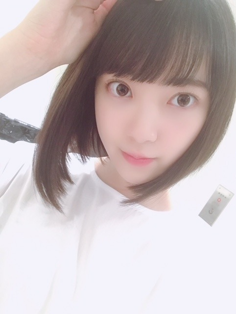
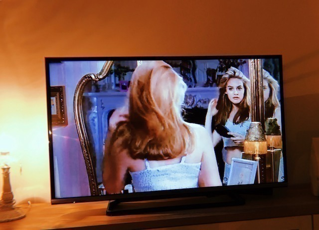
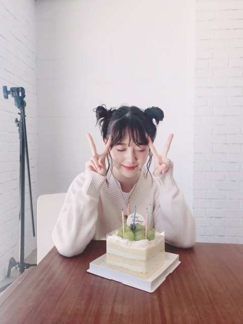

2018/1003Wed床が落ち着く。

最近は、毎日
ホットギミックの撮影をしています
妹の茜役の子とも仲良くなりました
本当の妹みたいに可愛くて
いつもハグしてます♡
撮影、引き続き頑張ります
何となくではありますが
自己紹介をしたいと思います
岐阜県出身 21歳 O型
出身地の岐阜は水や空気が綺麗で
君の名は。や聲の形や半分青い
の舞台にもなったり
自然たくさんで街並みも和な感じで
素敵な自慢の地元です
人や時間もまったり〜
O型だなぁと思うのは
蚊に刺されやすいところと
マイペース人間なところかな
母と姉はA型なのでA型っぽい部分も
あるらしいです
布団や洋服のシワ、時間や
リモコンの位置や家具のズレは気になる派です
好きな食べ物は里芋とひじき以外なら
何でも好きですが
特にお肉が大好きで1日1お肉は食べます
焼肉ではミノとセンマイ刺しとタンを！
餃子も大好物です
お寿司や海鮮も好きでハマグリとか
大アサリの浜焼きやウニ、カニなどが好きです
海まで行って食べ歩きもよくします
甘いものは苦手ですが
和菓子は食べれます
フルーツは特に桃とみかんが好き
◯◯狩りに行きたいのですが
なかなか行けてません...
性格を自己分析すると
マイペースで忘れっぽくて
負けず嫌いでポジティブ思考です
人を楽しませたり笑顔にすることが
好きです
口癖は
眠たい お腹すいた 忘れちゃったです
聞き間違いがひどいので
どうやら耳が遠いらしいです
何卒よろしくお願いします
趣味は映画鑑賞、美術館巡り、旅行、
お買い物、コスメ集めで
カメラも好きでたまに持ち歩いて
撮ったりしています
フィルム、チェキ、写ルンです、一眼を
使い分けています
全然上手くはないですが
忘れっぽい自分の記憶の一部となるし
瞬間の美しさを形に残して
大切にしたいと思っているので
自己満の趣味です
母をたくさん撮ってます
あとメンバー！
料理も趣味なのですが
最近は煮物のレパートリーを
増やしていきたいなと考えています
ドライカレー
ひき肉のあんかけ団子
かぼちゃの煮付け
豚肉の梅しそ巻き
が今のところ得意な料理たちかな...
食器集めは2年前からしていて
この間はarの連載で陶芸に挑戦して
湯のみとお皿を作りました！
オシャレな食器たくさん集めたいな
映画はお家でも観ますし
映画館でも観ます
ふらっと何となく観るのもあるし
絶対観ようと決めて観るのもあるし
特に調べたりもせず予備知識無しで
映画を観るのが好きです
人との出会いみたいに
一期一会なところにドキドキ。
乃木坂に入ってから、
そしてarのレギュラーモデルを
やらせていただくようになってから
より洋服やコスメが好きになって
時間があればファッションサイトを見たり
オシャレな人のコーディネートを見たり
ファッション雑誌を読んだりします
映画からヒントを得ることも
たくさんあります
最近好きなブランドさんは
ロザリームーン
FUR FUR
ハニーミーハニーです
ヨーロッパの女の子みたいな
白肌に個性的な洋服に赤リップ！
みたいなのがマイブームです
ヴィンテージの物も取り入れます
幼稚園からお抹茶やお茶が好きで
茶道をしていました
お茶が好きすぎる故に
いつかお茶漬け屋さんを
開きたいなと思っています
中学の頃は陸上部だったので走るのが
地味に得意です
ずっと好きな色は、白です！
その時々でブームな色は変わりますが
今はブルーと紫をよく身につけます
好きなタイプをよく聞かれるので...
包容力があって優しくて
中身が大人な人がいいです
一緒にいてまったりできるような
気を遣わない関係に憧れます
ホラー映画は大好きですが
心霊体験やおばけ屋敷、怖い話は
大の苦手です
ざっとこんな感じです！
何となくこのブログを見た方にも
何となく
知っていただけたら
嬉しいなー
早めにお仕事が終わった日に
お家でクルーレスっていう
映画を観ました

オシャレで可愛くてきゅんきゅん
この映画を見てから
黄色のチェックシャツが可愛くて
今気になってます
まだまだ観たい映画が溜まっていて...
猟奇的な彼女
きみに読む物語
ガールボス
イヴ・サンローラン
シスターズ
サイテーハイスクール
ビッグフィッシュ
いつ見れるかなぁ
よく握手会で聞かれるので
わたしが今まで観た中で
特に印象に残っている映画を
カテゴリ別にしておススメしてみますと、、
癒されたいとき
・魔女の宅急便
・ヘイフラワーとキルトシュー
・ビバリーヒルズチワワ
泣きたいとき
・ぼくは明日昨日のきみとデートする
・湯を沸かすほどの熱い愛
・タイヨウのうた
オシャレしたいとき
・アメリ
・プラダを着た悪魔
・お買い物中毒な私
ハラハラしたいとき
・テキサスチェーンソー
・プレデターシリーズ(1のシュワちゃんを是非)
・バイオハザードシリーズ
世界観に浸りたいとき
・渇き。
・ルーム
・かもめ食堂
きゅんきゅんしたいとき
・シンデレラストーリー
・溺れるナイフ
・陽だまりの彼女
です
観てみてください！
もちろん
ホットギミック も
是非観ていただきたいです
そして22枚目シングル
今回も選抜に選んでいただきました
ありがとうございます！
1列目2列目3列目アンダーと
今までに色んな位置を
経験させていただきました
今回は、この2列目のポジションで
自分なりに輝けるよう
全力を尽くします
諦めは私の中で負けたことになるので
今のこの素直な気持ちを忘れずに、
応援して下さる皆さんの笑顔を見る為にも、
まだまだ頑張りたいと思います
センターの七瀬さん
そしてポジションが隣の若月さん
二人が今年卒業されます
色んなメンバーの旅立ちがあります
正直めちゃくちゃ寂しいです、今はまだ。
でも大好きなメンバーだからこそ
悩みに悩んで決心した新たな道を
応援できたらいいな...と思います
みんな、まだ旅の途中。
その旅の一部分に乃木坂46があって
この時代この場所で七瀬さん、若月さんに
出会えたことが本当に嬉しい
後輩思いで真面目な若さん
自分の個性を大切にし続けた七瀬さん
アイドルとしても人としても
お二人を近くで見てきて、
たくさんの事を学び、知りました
私も頑張らなくちゃ！
バトンちゃんと繋げます
そして楓、りりあ初選抜おめでとう〜
一緒に楽しもうね☺︎
楓とは手羽先の約束 りりあとはディズニーの
約束してるから早く果たせますように
2018年も残り3カ月、
色んな形に変わりゆく日々ですが
そんな不安定さが
より、今を生きている証であり
時代の証になっています
乃木坂46をこれからも変わらず
よろしくお願いしますm(._.)m

ちょっぴり早めですが
arの皆さんに22歳を祝っていただきました！
ポジティブに、
君らしく、
私らしく、！
長くなってごめんなさい、
では☺︎
2018/10/03 20:48
コメント(650)
ホットギミック、楽しみにしとるでね~☺️
映画的に！シリーズ映画は？ないんですか(ノ゜O゜)ノ
まだ映画業界を席巻中の、マーベル映画に一期一会で出会ってないみたいですね!?(＾O)＝3
１１月公開のダークヒーローホラー映画「ヴェノム」はオススメしますm(__)m
全世界歴代映画ランキングで１０位圏内に４作品！
ランクインするくらい、
ハイクオリティーな作品が多過ぎるのがマーベル作品
デッドプールもローガンも映画も素晴らしいし、
マーベルドラマもあって、レギオンとかファッションセンスも高くて面白いし、デアデビルは盲目の主人公という新感覚だったり、
女性主人公のジェシカ・
ジョーンズは人間模様が、女性的に奥深い内容です。
他の映画的には、掘りさん好みならジョン・ヒューズとジム・ジャームッシュと ウェス・アンダーソンの
監督作品はオススメ過ぎる＼＾o＾／
それでは撮影も頑張って、ください・・・。m(__)m
まだ映画業界を席巻中の、マーベル映画に一期一会で出会ってないみたいですね!?(＾O)＝3
１１月公開のダークヒーローホラー映画「ヴェノム」はオススメしますm(__)m
全世界歴代映画ランキングで１０位圏内に４作品！
ランクインするくらい、
ハイクオリティーな作品が多過ぎるのがマーベル作品
デッドプールもローガンも映画も素晴らしいし、
マーベルドラマもあって、レギオンとかファッションセンスも高くて面白いし、デアデビルは盲目の主人公という新感覚だったり、
女性主人公のジェシカ・
ジョーンズは人間模様が、女性的に奥深い内容です。
他の映画的には、掘りさん好みならジョン・ヒューズとジム・ジャームッシュと ウェス・アンダーソンの
監督作品はオススメ過ぎる＼＾o＾／
それでは撮影も頑張って、ください・・・。m(__)m
未央奈ちゃん、ひろっしーです！コメント投稿515回目です！
前回はブログ「夜空の雲」にモバメの感想と9月30日の出来事を書きました！
時間→「No.421 2018年9月30日 23:57」
ブログ更新ありがとうございます！
早速めっちゃ可愛いね(癒) 白似合うな～！
毎日「ホットギミック」の撮影お疲れ様です！妹役の子とハグする程仲良くなったんですね！しかも共演者にいじられてるそうで(笑) これも未央奈ちゃんの人柄だと思います！幸せだね！仲良しすぎて羨ましいよ～！これだけ共演者が仲良かったらきっと素晴らしい作品が出来ると思います！というか、まだ映画の撮影中なのにメイキングで未央奈ちゃんがいじられてる姿を観たいと思いました(笑) 絶対DVD買います！
何となくで書かれた自己紹介・・・
結構書かれてあってビックリしましたし改めて知れて嬉しかったです！
僕もO型なんですが、仕事では早さより丁寧を心がけてしているので、割とA型に間違われる事があります！良い間違われ方だけど、要領が悪いだけかも(笑) あと手抜き出来ないし(笑)
あっ、勿論早くする事も心がけていますよ(笑)
里芋とひじき、めっちゃ美味いんやけどな～！
フルーツ、僕は桃とパイナップルが好き～！
料理だと特にドライカレー作って欲しいな～！
1個1個書いていたら長くなりすぎたので割愛させて頂きます(謝)「レコメン！」聴きながらじっくり読まさせて頂きました！
今回の22ndシングルは、若様となぁちゃんの最後のシングルになりますね！未央奈ちゃんは勿論、特に卒業される2人には後悔の無いよう全力で楽しんで欲しいです！
今の未央奈ちゃんの素直な気持ちが知れて凄く嬉しかったです！自分なりに輝いちゃってね！キラキラ輝く未央奈ちゃんが見れるの楽しみにしています！未央奈ちゃんならきっと大丈夫！
ここまで読んで頂きありがとうございました！
毎日お仕事お疲れ様です！体調にはくれぐれも気を付けて頑張ってくださいね！
おやすみおな～！
前回はブログ「夜空の雲」にモバメの感想と9月30日の出来事を書きました！
時間→「No.421 2018年9月30日 23:57」
ブログ更新ありがとうございます！
早速めっちゃ可愛いね(癒) 白似合うな～！
毎日「ホットギミック」の撮影お疲れ様です！妹役の子とハグする程仲良くなったんですね！しかも共演者にいじられてるそうで(笑) これも未央奈ちゃんの人柄だと思います！幸せだね！仲良しすぎて羨ましいよ～！これだけ共演者が仲良かったらきっと素晴らしい作品が出来ると思います！というか、まだ映画の撮影中なのにメイキングで未央奈ちゃんがいじられてる姿を観たいと思いました(笑) 絶対DVD買います！
何となくで書かれた自己紹介・・・
結構書かれてあってビックリしましたし改めて知れて嬉しかったです！
僕もO型なんですが、仕事では早さより丁寧を心がけてしているので、割とA型に間違われる事があります！良い間違われ方だけど、要領が悪いだけかも(笑) あと手抜き出来ないし(笑)
あっ、勿論早くする事も心がけていますよ(笑)
里芋とひじき、めっちゃ美味いんやけどな～！
フルーツ、僕は桃とパイナップルが好き～！
料理だと特にドライカレー作って欲しいな～！
1個1個書いていたら長くなりすぎたので割愛させて頂きます(謝)「レコメン！」聴きながらじっくり読まさせて頂きました！
今回の22ndシングルは、若様となぁちゃんの最後のシングルになりますね！未央奈ちゃんは勿論、特に卒業される2人には後悔の無いよう全力で楽しんで欲しいです！
今の未央奈ちゃんの素直な気持ちが知れて凄く嬉しかったです！自分なりに輝いちゃってね！キラキラ輝く未央奈ちゃんが見れるの楽しみにしています！未央奈ちゃんならきっと大丈夫！
ここまで読んで頂きありがとうございました！
毎日お仕事お疲れ様です！体調にはくれぐれも気を付けて頑張ってくださいね！
おやすみおな～！
初めてコメントします！
みおなは元々すきだったんだけど、
このブログ読んで、なんでだか
みおなすき！！！ってなりました！！
乃木坂を卒業していく子も
今を守っていく子も、
みんなが幸せになれますように！
みおなは元々すきだったんだけど、
このブログ読んで、なんでだか
みおなすき！！！ってなりました！！
乃木坂を卒業していく子も
今を守っていく子も、
みんなが幸せになれますように！
こちらこそありがとう！
この前岐阜に行きました。
丸デブ総本店に行ってきました。
美味しかった！また行きたいです。
他にもオススメあったら教えてくたさい！
この前岐阜に行きました。
丸デブ総本店に行ってきました。
美味しかった！また行きたいです。
他にもオススメあったら教えてくたさい！
自己紹介ありがとうね 結構たくさん紹介したのね( ・∇・)
ちなみに僕も写真撮るの好きよ
きみに読む物語という映画 だいぶ何年か前に観たことあるなぁ
ちなみに僕も写真撮るの好きよ
きみに読む物語という映画 だいぶ何年か前に観たことあるなぁ
22歳になられたんですね、おめでとうございます。そして選抜おめでとうございます。沢山の趣味があるってすごいですね、それが堀さんの魅力でもありますが堀さんが頑張っていると私も一歩ずつ前に進もうと思えます。いつも笑顔にしてくれてありがとうございます。
未央奈～ こんにちは
ブログ更新ありがとうございます。
連日の映画の撮影、おつかれさまです。他のメンバーとは違う行動だけに、一日の疲れ具合も大変だと思います。でも、共演者さんたちともすっかり打ち解け、ハグし合える関係なんて、何ともうらやましいですね。
２２ndの選抜発表、自分のことより、「２期生」の不遇さに対して相当怒ってくれていたそうで、その気持ちも痛いほど伝わってきました。ずっと、先頭に立って引っ張ってくれていただけに、よほど悔しかったんだと思います。
未央奈の「自己紹介」、ありがとうございます。知ってるようで、まだまだ知らないことあったんだと改めて思いました。今？ と思いながらもありがたかったです。
なーちゃんに次いで、若さままで卒業発表。驚くばかりです。後輩思いのメンバーということで、若さまに博多座に連れて行ってもらったときのことを思い出しました。
二人の先輩には、今のうちにたっぷりと甘えてくださいね。
レコメン、おつかれさまでした。生放送だと元気な声が直接聞くことができ何よりですね。
ブログ更新ありがとうございます。
連日の映画の撮影、おつかれさまです。他のメンバーとは違う行動だけに、一日の疲れ具合も大変だと思います。でも、共演者さんたちともすっかり打ち解け、ハグし合える関係なんて、何ともうらやましいですね。
２２ndの選抜発表、自分のことより、「２期生」の不遇さに対して相当怒ってくれていたそうで、その気持ちも痛いほど伝わってきました。ずっと、先頭に立って引っ張ってくれていただけに、よほど悔しかったんだと思います。
未央奈の「自己紹介」、ありがとうございます。知ってるようで、まだまだ知らないことあったんだと改めて思いました。今？ と思いながらもありがたかったです。
なーちゃんに次いで、若さままで卒業発表。驚くばかりです。後輩思いのメンバーということで、若さまに博多座に連れて行ってもらったときのことを思い出しました。
二人の先輩には、今のうちにたっぷりと甘えてくださいね。
レコメン、おつかれさまでした。生放送だと元気な声が直接聞くことができ何よりですね。
未央奈ちゃんブログありがとう！
レコメン聴いたよ！
今週も楽しかった！
明日からもがんばろう！
レコメン聴いたよ！
今週も楽しかった！
明日からもがんばろう！
ほりっぴ～、ナンチです♪
ブログ更新ありがとう～
久々のほりのことだね
自分もO型だけど半分A型が入ってると思うところありあり
22枚目は何か節目のシングルになりそうだね
ほりっぴ～にとって素敵なシングルになりますように
でもやっぱり寂しいよねぇ
ブログ更新ありがとう～
久々のほりのことだね
自分もO型だけど半分A型が入ってると思うところありあり
22枚目は何か節目のシングルになりそうだね
ほりっぴ～にとって素敵なシングルになりますように
でもやっぱり寂しいよねぇ
福神入りおめでとう。
いろいろと考えさせられる選抜でした。
映画は1ヵ月くらい前に、検察側の罪人、銀魂2、SUNNYを観ました。どれも面白かったです。
紹介してくれた映画、観ようと思ってたけど、観そびれちゃった映画もあるので、ぜひ観たいと思います。
木曜日の朝は、通勤中にradikoで前日のレコメンを聴くのがルーティンになっています。のりさんとの絡みが面白く、思わず電車の中で笑いそうになります。
映画の撮影頑張ってください。
いろいろと考えさせられる選抜でした。
映画は1ヵ月くらい前に、検察側の罪人、銀魂2、SUNNYを観ました。どれも面白かったです。
紹介してくれた映画、観ようと思ってたけど、観そびれちゃった映画もあるので、ぜひ観たいと思います。
木曜日の朝は、通勤中にradikoで前日のレコメンを聴くのがルーティンになっています。のりさんとの絡みが面白く、思わず電車の中で笑いそうになります。
映画の撮影頑張ってください。
笑顔の未央奈がこのシングルでも楽しみ！
がんばって！！
がんばって！！
唐突の自己紹介。
22歳を迎えるにあたって、
堀未央奈の新章が、始まるということでしょうか。
ブログ更新ありがとうございます。
撮影、お疲れさまです。
忘れっぽいのは、他にもっと大事なことがあるから。
気にしなくても、いいんじゃない。
「プレデター」「バイオ」いいですね。
「バイオ」1の、アリスが目覚めてから、特殊部隊が突入してくるまでのシーンが、お気に入り。ゲームの世界観、そのまんま。
「プレデター」は、オイラも、シュワちゃんのが、好き！
君らしく、輝きながら。
諦めなければ、大丈夫！
22歳を迎えるにあたって、
堀未央奈の新章が、始まるということでしょうか。
ブログ更新ありがとうございます。
撮影、お疲れさまです。
忘れっぽいのは、他にもっと大事なことがあるから。
気にしなくても、いいんじゃない。
「プレデター」「バイオ」いいですね。
「バイオ」1の、アリスが目覚めてから、特殊部隊が突入してくるまでのシーンが、お気に入り。ゲームの世界観、そのまんま。
「プレデター」は、オイラも、シュワちゃんのが、好き！
君らしく、輝きながら。
諦めなければ、大丈夫！
おつかれさま
同じO型だからかな苦手なものと好きなものがすごい似てる！
抹茶は大好物！
もしみおながお茶漬け屋開いたら常連になるかな
お茶大好き！
おすすめの映画教えてくれてありがとう
日本帰ったら見てみるね
もちろんホットギミックも！！
メンバー思いで優しいね
僅かなメンバーとの時間、大切に過ごしてね
一生のとても大切な仲間たちと
早いけど22歳お誕生日おめでとう！
早く車運転できる年になりたいな
同じO型だからかな苦手なものと好きなものがすごい似てる！
抹茶は大好物！
もしみおながお茶漬け屋開いたら常連になるかな
お茶大好き！
おすすめの映画教えてくれてありがとう
日本帰ったら見てみるね
もちろんホットギミックも！！
メンバー思いで優しいね
僅かなメンバーとの時間、大切に過ごしてね
一生のとても大切な仲間たちと
早いけど22歳お誕生日おめでとう！
早く車運転できる年になりたいな
堀さん、こんばんは。盛り沢山の内容のブログ更新してくれてありがとうございます。
几帳面な所や苦手な食べ物やお茶漬け屋さんの話は、僕は初めて聞いたような気がしました。でも堀さんはどんなに話を聞いてもどうも掴みきれないというか、２週間後くらいにまた自己紹介聞いたら新たな趣味増えてそうなイメージです。
挙げてる必ず映画も見ますね。
ホットギミックの撮影は順調みたいですね。ネットニュースで見た山戸監督のコメントに、たったひとりの十代の女の子へ手紙を書くように作るとあって、なるほど映画は撮影から客の感想まで時間が掛かるから、撮影上で何を良しとするかの物差しとして、たったひとりの女の子を想定してるんだなって思いました。
何列目に居たって必ず出てくる、今回のシングルきっかけで堀さんを好きになるたった一人どころじゃないファンのために、頑張って輝いてくださいね。
変わりゆくといえば、ホットギミック後には堀さんが映画を見る視点なんかも変わってくるのかもしれませんね。きっと撮影終了後、完成したのを見た後、客の感想を聞いた後と、毎回経験値が入ってくるんじゃないかなって思います。これからの堀さんの映画の話も楽しみです。撮影頑張ってくださいね。
あと、今公開してる「クレイジー・リッチ」は多分堀さん好みだと思ったので、撮影後にでもいつか時間があったらお勧めです。
あと、数日前にモバメ載せてたプティくんの写真超好きです。当たり前のように自分の場所にしててカワイイです。犬って凄いですね。色んな生き物が首伸ばしたり葉っぱに似たりと色んな進化する中で、撫でたくなるように進化するだなんて。あんなに撫でやすい質感と形状で撫でやすい位置を陣取るとは感心します。
几帳面な所や苦手な食べ物やお茶漬け屋さんの話は、僕は初めて聞いたような気がしました。でも堀さんはどんなに話を聞いてもどうも掴みきれないというか、２週間後くらいにまた自己紹介聞いたら新たな趣味増えてそうなイメージです。
挙げてる必ず映画も見ますね。
ホットギミックの撮影は順調みたいですね。ネットニュースで見た山戸監督のコメントに、たったひとりの十代の女の子へ手紙を書くように作るとあって、なるほど映画は撮影から客の感想まで時間が掛かるから、撮影上で何を良しとするかの物差しとして、たったひとりの女の子を想定してるんだなって思いました。
何列目に居たって必ず出てくる、今回のシングルきっかけで堀さんを好きになるたった一人どころじゃないファンのために、頑張って輝いてくださいね。
変わりゆくといえば、ホットギミック後には堀さんが映画を見る視点なんかも変わってくるのかもしれませんね。きっと撮影終了後、完成したのを見た後、客の感想を聞いた後と、毎回経験値が入ってくるんじゃないかなって思います。これからの堀さんの映画の話も楽しみです。撮影頑張ってくださいね。
あと、今公開してる「クレイジー・リッチ」は多分堀さん好みだと思ったので、撮影後にでもいつか時間があったらお勧めです。
あと、数日前にモバメ載せてたプティくんの写真超好きです。当たり前のように自分の場所にしててカワイイです。犬って凄いですね。色んな生き物が首伸ばしたり葉っぱに似たりと色んな進化する中で、撫でたくなるように進化するだなんて。あんなに撫でやすい質感と形状で撫でやすい位置を陣取るとは感心します。
可愛いだけじゃなく良い子やなぁ未央奈は、、、うぅ～感動！笑
古いアカデミー作品も良いのあるよ。
古いアカデミー作品も良いのあるよ。
不安定さはより生きてる証、みおな、いい事言う。。引き続き頑張って行こう～～
掘ちゃんいつもブログ読んでるけど今回のブログ特に好き！
様々で、色々な想いが詰まっててとてもいい意味で考えさせられる。。
考えること反省すること行動することをやめない限りは絶対成長し続けるからもっともっと大きくなってまた掘ちゃんがセンターのシングルが見たいです！！
様々で、色々な想いが詰まっててとてもいい意味で考えさせられる。。
考えること反省すること行動することをやめない限りは絶対成長し続けるからもっともっと大きくなってまた掘ちゃんがセンターのシングルが見たいです！！
ブログ更新ありがとうございます！いつも元気をもらっています！映画撮影でお体を壊さないよう気をつけてくださいね！これから寒くなってきますので暖かい紅茶に蜂蜜を少しいれるなどしたら体が温まり喉も癒されるので是非！！！
おはみおな(*´ω｀*) myみおな♪分析！ありがとう♪ヽ(´▽｀)/里芋 ヒジキ。美味しいのに〜〜〜↑↑↑ヽ(￣▽￣)ノ
おはようございます。
ちょいと早いかな？(笑)
少し早く起きたよ。
映画撮影は順調かな？
いろんな戸惑いや葛藤があるみたいやね！
勿論、演じる喜びはあるやろうけど、ブログ読んでいたらいろいろ考えちゃったよ！
堀ちゃんのいつものスタイルを無理に変えず無理に背伸びしんと普段の堀ちゃんでいたらエエんと違うかな？
ごめんね。
勝手に解釈しちゃって。
やるからには最後まで頑張りや！
♪泣きなさい～笑いなさい。
頑張り、応援します。
あとね、癖？
いくつか共通点あるよ(笑)
俺もO型やけど、リモコンやらいつも同じ場所にないと嫌。
衣類も同じかな？(笑)
食わず嫌いはあるけどね、好き嫌いはないよ！
なんか作ってくれるかな？(笑)
なんてね！
ではでは、またね！
撮影大変やろうし乃木坂の活動めあるし、体調には気をつけて、無理なく頑張り！
ほなね、堀ちゃん。
更新ありがとう。
ちょいと早いかな？(笑)
少し早く起きたよ。
映画撮影は順調かな？
いろんな戸惑いや葛藤があるみたいやね！
勿論、演じる喜びはあるやろうけど、ブログ読んでいたらいろいろ考えちゃったよ！
堀ちゃんのいつものスタイルを無理に変えず無理に背伸びしんと普段の堀ちゃんでいたらエエんと違うかな？
ごめんね。
勝手に解釈しちゃって。
やるからには最後まで頑張りや！
♪泣きなさい～笑いなさい。
頑張り、応援します。
あとね、癖？
いくつか共通点あるよ(笑)
俺もO型やけど、リモコンやらいつも同じ場所にないと嫌。
衣類も同じかな？(笑)
食わず嫌いはあるけどね、好き嫌いはないよ！
なんか作ってくれるかな？(笑)
なんてね！
ではでは、またね！
撮影大変やろうし乃木坂の活動めあるし、体調には気をつけて、無理なく頑張り！
ほなね、堀ちゃん。
更新ありがとう。
ハラハラしたいとき
呪怨シリーズ
ワクワクしたいとき
インディ・ジョーンズ
ウォーターワールド
ハムナプトラ2
切なくなりたいとき
ショーシャンクの空に
100万円と苦虫女
強くなりたいとき
クローズZERO
闇金ウシジマくん
(*´∇｀*)(*´∇｀*)(*´∇｀*)(*´∇｀*)(*´∇｀*)
呪怨シリーズ
ワクワクしたいとき
インディ・ジョーンズ
ウォーターワールド
ハムナプトラ2
切なくなりたいとき
ショーシャンクの空に
100万円と苦虫女
強くなりたいとき
クローズZERO
闇金ウシジマくん
(*´∇｀*)(*´∇｀*)(*´∇｀*)(*´∇｀*)(*´∇｀*)
この自己紹介は永久保存版だね！
これまで未央奈のことをずっと見てきて、
知っていることもたくさんあったけど、
初めて知ったことも結構あったよ。
改めて未央奈のことをたくさん知ることができて、
めちゃくちゃ嬉しい！！
そして、改めてこういう未央奈が
やっぱり大好きだなーって思ったよ。
ホットギミックのカテゴリーが気になった。
これは、実際に映画を観て確かめるしかないね。笑
これまで未央奈のことをずっと見てきて、
知っていることもたくさんあったけど、
初めて知ったことも結構あったよ。
改めて未央奈のことをたくさん知ることができて、
めちゃくちゃ嬉しい！！
そして、改めてこういう未央奈が
やっぱり大好きだなーって思ったよ。
ホットギミックのカテゴリーが気になった。
これは、実際に映画を観て確かめるしかないね。笑
素敵な自己紹介ですね。
映画で知ってもらえた人にも堀さんの魅力が伝わると良いですね。
次のシングルも頑張ってください。
映画で知ってもらえた人にも堀さんの魅力が伝わると良いですね。
次のシングルも頑張ってください。
写真超可愛いです！
カメラ堀殿よきよきピーナッツ[岩蔭|](ｴ)￣)
レコメン堀殿♡美声に癒されうれぴーぽー(o￣◎￣)oバブゥ♡
誕生日秋生まれグレーのパーカー旅ウキウキさつまいも大明神トークけんぴゅー(*_Д_*(*_Д_*(*_Д_*)*_Д_*)*_Д_*)ﾎﾟｯ
レコメン堀殿♡美声に癒されうれぴーぽー(o￣◎￣)oバブゥ♡
誕生日秋生まれグレーのパーカー旅ウキウキさつまいも大明神トークけんぴゅー(*_Д_*(*_Д_*(*_Д_*)*_Д_*)*_Д_*)ﾎﾟｯ
自己紹介いいね！
映画女優としては初めてになるもんね。
新しく気になってもらえた方に
みおなをたくさん知ってもらえたらな◎
とかいいつつ、
A型っぽいところがあるとか
ひじきが苦手とか
自分も初耳なことあったりして～
22nd選抜はね、
思うところはあるけど、でも
みおなにはうまく映画とバランスを取って
オンオフを切り替えて
両立させてほしいなって思う。
そのためのポジションなのかなって。
だから自分は心配してないよ◎
みおなは負けないし
今回を越えた先にさらに大きくなった
みおなを見られると思うから(^-^)
ホットギミック観るよ！
22ndシングルも楽しみにしてるから！
そしてみおな自身も
なーちゃんと若様との時間を
大切にね。
体調には気をつけて、頑張って！
映画女優としては初めてになるもんね。
新しく気になってもらえた方に
みおなをたくさん知ってもらえたらな◎
とかいいつつ、
A型っぽいところがあるとか
ひじきが苦手とか
自分も初耳なことあったりして～
22nd選抜はね、
思うところはあるけど、でも
みおなにはうまく映画とバランスを取って
オンオフを切り替えて
両立させてほしいなって思う。
そのためのポジションなのかなって。
だから自分は心配してないよ◎
みおなは負けないし
今回を越えた先にさらに大きくなった
みおなを見られると思うから(^-^)
ホットギミック観るよ！
22ndシングルも楽しみにしてるから！
そしてみおな自身も
なーちゃんと若様との時間を
大切にね。
体調には気をつけて、頑張って！
未央奈～こんばんは！
ぽてとです！
22枚目も楽しみにしてるね！！
あと、自己紹介！
めっちゃ細かくわかりやすい♪
未央奈のことは初期から知ってるけど
改めて読むと知らなかった事とかあって
勉強できた♪
映画撮影ふぁいとやで！
じゃあまたね♪
ぽてとです！
22枚目も楽しみにしてるね！！
あと、自己紹介！
めっちゃ細かくわかりやすい♪
未央奈のことは初期から知ってるけど
改めて読むと知らなかった事とかあって
勉強できた♪
映画撮影ふぁいとやで！
じゃあまたね♪
堀ちゃんお疲れ様です。
改めて自己紹介ありがとうございます。
映画のくだりは参考になります。
あと、癒しはドラマもお薦めですよ。
改めて自己紹介ありがとうございます。
映画のくだりは参考になります。
あと、癒しはドラマもお薦めですよ。
未央奈ちゃんブログ更新ありがとう！！
今回はいろいろ話してくれてとても楽しかったです！！
特に自分もO型で他人からはよくA型に間違えられるので、
とても共感しちゃいました！！
蚊に刺されやすいとか！w
そして趣味の映画のお話は、
自分が見たことない映画もあったから
機会があればオススメしていた映画みたいと思います!!
最後に、二人の卒業は寂しいと思うけど、楽しく過ごすのが一番だと思います!!
お仕事大変だと思いますが、頑張ってください‼
大好きです！
いつも応援しています！！
今回はいろいろ話してくれてとても楽しかったです！！
特に自分もO型で他人からはよくA型に間違えられるので、
とても共感しちゃいました！！
蚊に刺されやすいとか！w
そして趣味の映画のお話は、
自分が見たことない映画もあったから
機会があればオススメしていた映画みたいと思います!!
最後に、二人の卒業は寂しいと思うけど、楽しく過ごすのが一番だと思います!!
お仕事大変だと思いますが、頑張ってください‼
大好きです！
いつも応援しています！！
堀ちゃん！自己紹介ありがとう！！！
この内容は推しメンの未央奈の僕にとっては
嬉しい内容です。
知らなかった部分の未央奈のこと知れたからです！
大好きな先輩二人が卒業するのは本当ファンからしても物凄くショックで寂しい気持ちで一杯で、正直受け入れるのに時間が掛かりそうです。
名古屋の全握行けるといいなあ。。
行けたら勿論、未央奈に元気貰いに行きますよ！！
この内容は推しメンの未央奈の僕にとっては
嬉しい内容です。
知らなかった部分の未央奈のこと知れたからです！
大好きな先輩二人が卒業するのは本当ファンからしても物凄くショックで寂しい気持ちで一杯で、正直受け入れるのに時間が掛かりそうです。
名古屋の全握行けるといいなあ。。
行けたら勿論、未央奈に元気貰いに行きますよ！！
お疲れです！
「ぼくは明日昨日の君とデートする」本当に泣いた！
おススメした映画見ようかな
ホットギミック楽しみです！撮影とか色々大変だと思いますが頑張ってください！
「ぼくは明日昨日の君とデートする」本当に泣いた！
おススメした映画見ようかな
ホットギミック楽しみです！撮影とか色々大変だと思いますが頑張ってください！
レコメン Youtubeにアップされていたの聴きました 映画の撮影がんばってください！
今回のブログ堀ちゃんの事が良くわかって楽しく読みました！
今回のブログ堀ちゃんの事が良くわかって楽しく読みました！
堀さん、おはようございます。
連日の映画撮影お疲れさまです。初主演の緊張もあることでしょうけれど、前向きに取り組んでいる堀さんの姿が目に浮かぶよう。大切な作品となる映画ですから、クランクアップまでがんばって！
西野さんに続いて若月さんも乃木坂46から去っていかれます。悲しいし寂しいことですけれど、これからもお二人の活躍を見守っていけることが心の救いに。新たな空へ羽ばたくお二人をこれからも応援していきたいと思っています。
今回何かをリセットするかのように堀さんが改めて書き起こしてくれた自己紹介の文章をしみじみ読みました。
堀さんが二期生として乃木坂46に入ってきたときのことを思い出したり、これまでの堀さんの活躍を思い返したり、堀さんのヘンな言動を思い浮かべたり（笑）。
時も人もものの形も移ろっていきますが、それを受けとめて心を澄ませて、これからもずっと大切なものを愛していきたいものです。
それではまたコメントします。
さらばだ、また会おう！（気球に乗って去りぬ〜）
連日の映画撮影お疲れさまです。初主演の緊張もあることでしょうけれど、前向きに取り組んでいる堀さんの姿が目に浮かぶよう。大切な作品となる映画ですから、クランクアップまでがんばって！
西野さんに続いて若月さんも乃木坂46から去っていかれます。悲しいし寂しいことですけれど、これからもお二人の活躍を見守っていけることが心の救いに。新たな空へ羽ばたくお二人をこれからも応援していきたいと思っています。
今回何かをリセットするかのように堀さんが改めて書き起こしてくれた自己紹介の文章をしみじみ読みました。
堀さんが二期生として乃木坂46に入ってきたときのことを思い出したり、これまでの堀さんの活躍を思い返したり、堀さんのヘンな言動を思い浮かべたり（笑）。
時も人もものの形も移ろっていきますが、それを受けとめて心を澄ませて、これからもずっと大切なものを愛していきたいものです。
それではまたコメントします。
さらばだ、また会おう！（気球に乗って去りぬ〜）
堀ちゃん、大好きだよー
更新ありがとうございます！撮影も毎日お疲れ様です
岐阜はものすごく魅力的なところなんですね！興味が湧いてきましたし、行ってみたくなりました笑
最近は特に、ほーりーがいろんな感情とぶつかっても前に進んでいこうとされてる姿が好きです。
いつも応援してるので頑張ってくださいね！！
ちなみに 日本バージョンの猟奇的な彼女おすすめです笑笑
岐阜はものすごく魅力的なところなんですね！興味が湧いてきましたし、行ってみたくなりました笑
最近は特に、ほーりーがいろんな感情とぶつかっても前に進んでいこうとされてる姿が好きです。
いつも応援してるので頑張ってくださいね！！
ちなみに 日本バージョンの猟奇的な彼女おすすめです笑笑
誕生日おめでとう！ずっと応援してるよ
堀ちゃん、これからが勝負
22枚目シングル、福神おめでとうございます。堀ちゃんのことは、ほとんど知ってます。また会いたいなー。
映画も楽しみにしています。
岐阜、一度行ってみたいです。岐阜のおすすめのスポットがあったら、教えてください。よろしくお願いします。
あまり無理をせず、頑張ってください。僕も、頑張ります。
乃木坂46と共に、歩んでいきたいです。僕の気持ち、皆さんに、届いてるかな？
映画も楽しみにしています。
岐阜、一度行ってみたいです。岐阜のおすすめのスポットがあったら、教えてください。よろしくお願いします。
あまり無理をせず、頑張ってください。僕も、頑張ります。
乃木坂46と共に、歩んでいきたいです。僕の気持ち、皆さんに、届いてるかな？
みおなはどこのポジションでも絶対輝ける！！
先輩に慕って後輩を想って乃木坂のことも考えてるみおなほんとうにすこ！！
純粋にみおなのそういうとこすこ！！！
映画主演頑張ってください！
先輩に慕って後輩を想って乃木坂のことも考えてるみおなほんとうにすこ！！
純粋にみおなのそういうとこすこ！！！
映画主演頑張ってください！
後でゆっくり！みおな♪観察しよワハハ(笑)ヽ(￣▽￣)ノ
センマイ美味しいですよね！ブログ更新ありがとう^^*
はじめまして。
最近、堀ちゃんのファンになりました。
堀ちゃんのことが色々わかって興味深いです。
里芋とひじきが苦手なようですが、その理由が知りたいです。
最近、堀ちゃんのファンになりました。
堀ちゃんのことが色々わかって興味深いです。
里芋とひじきが苦手なようですが、その理由が知りたいです。
未央奈ちゃん更新ありがとー！
毎日の映画撮影お疲れ様です！
忙しいのに書いてくれてありがとう！！
隅々までしっかり拝見しました！
改めて未央奈ちゃんのことを知れてよかったよ！
好きな人の好きなもの知って共有できるって素敵なことだね。
そして、今回も選抜おめでとう！
これからも未央奈ちゃんらしく頑張ってね！
ずっと応援してます(^o^)
毎日の映画撮影お疲れ様です！
忙しいのに書いてくれてありがとう！！
隅々までしっかり拝見しました！
改めて未央奈ちゃんのことを知れてよかったよ！
好きな人の好きなもの知って共有できるって素敵なことだね。
そして、今回も選抜おめでとう！
これからも未央奈ちゃんらしく頑張ってね！
ずっと応援してます(^o^)
未央奈ちゃんありがとうございます！楽しみにしてます！頑張ります‼お疲れ様です！気を付けて下さい。ありがとうございます
未央奈のことを知れば知るほど大好きになって行くし応援したくなる！ブログ更新ありがとうね
初めまして、茶くれ と言います。体の異変に戸惑た頃から少し気持ちが落ち着きましたか？ 機械だって壊れたりするよ 焦らず行こう。みんなまだ旅の途中は、なかなか良く書けてる生田君が推すのがわかりました。 銘木は１日にして成らず
ではまた・・・by茶くれ
ではまた・・・by茶くれ
応援してます！
映画頑張ってね
映画頑張ってね
ブログ更新ありがとう
これからも映画撮影頑張ってください
今週末名古屋での全国握手会頑張ってください
体調不良にならないように体をたまには休めてください
これからも応援してます
未央奈さん頑張ってください
これからも映画撮影頑張ってください
今週末名古屋での全国握手会頑張ってください
体調不良にならないように体をたまには休めてください
これからも応援してます
未央奈さん頑張ってください


みーちゃんも一眼使ってるのねん！
写真撮るの楽しいよね～
映画楽しみにしとるばいщ(ﾟДﾟщ)щ(ﾟДﾟщ)